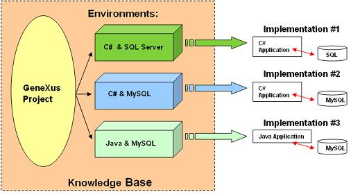
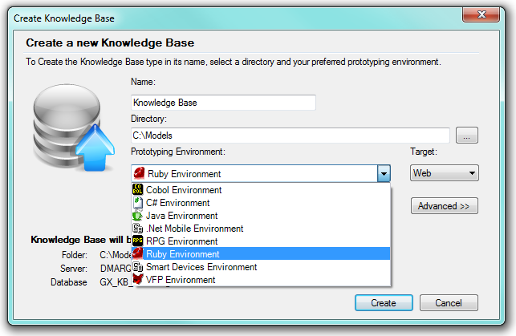
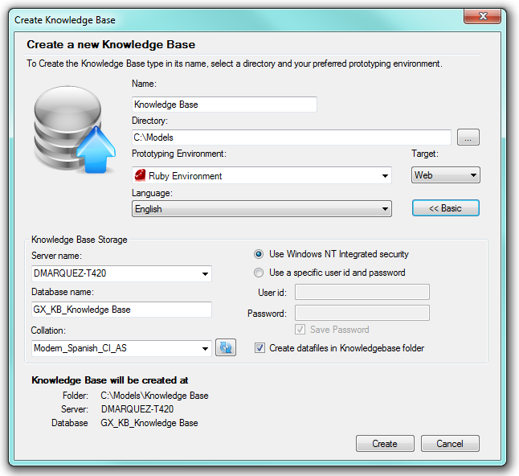
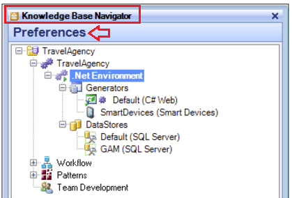
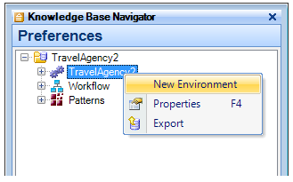
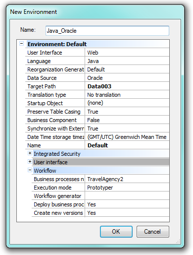

An environment is a place for storing values of the system implementation details, for example the programming language used to generate the application and the data base information. Using several environments allows you to have different implementations for one single application. The same GeneXus-developed solution can run in different platforms, without changes in model design or code writings, with the only need of defining an appropriate environment for each platform.  Fig.1 - Using many environments to get many implementationsThe analyst works in the design of the application using GeneXus object to model reality, following the GeneXus Development Cycle. At the time of running the application, GeneXus will use the information stored in the active Environment to generate and execute the application in a specific implementation platform. At the beggining of the process, when a user creates a new Knowledge Base, a default Environment is created. The Create Knowledge Base dialog box requests the user to select an environment (i.e.: C# Environment, Java Environment or Ruby Environment):  Fig.2a - The basic Create Knowledge Base dialog boxThe selection made determines the default generator that will be used for codification of the application source programs, and routines to modify the daba base structure (called Reorganization). The Advanced button in the Create Knowledge Base dialog box allows for adding additional information relative to the database connection information:  Fig.2b - The advanced Create Knowledge Base dialog boxOnce the creation process ends, the minimum information for running the application on the default platform is provided. The Preference windows includes a root node with the name of the Knowledge Base, and the Default Environment node below it, highligted in bold case:  Fig 3. - The Default Environment nodeThe name used here, stands for the selected environment, i.e. .NET Environment, Java Environment, etc. However, this name can be easily changed with a right click on the node or by pressing F2. Two nodes appear below the default Environment root node: Generators and Data Stores. Any given environment has at least one Generator node, and one Data Store node. GeneratorsThe Generator node, called Default, identifies the same actual generator (C#, Java, etc.). The named Default, means that any given object will be generated with this generator unless stated otherwise. Therefore, that generator will be used to change the Data Base structure and to write the application source code. So, once the environment generator is selected, it will be used for both processes. The generator assigned can be changed simply by making a single change in one place, through the Environment's Language property. Data StoresBelow the Data Stores node is a Default node with the default associated DBMS name between brackets. The DBMS assigned by default relates to the generator selected. i.e. if you select Ruby GeneXus will propose you MySQL If you select C#, the suggested default DBMS will be SQL Server. It is possible to change the DBMS by using the Environment's DataSource property. Working with several EnvironmentsIn addition to the default environment created automatically by GeneXus when the KB is created, the user can create as many environments as needed. This allows the developer to create different implementations from the same design, thus obtaining numerous DBMS/Programming language combinations. To define a new environment, select Knowledge Base Preferences in the Knowledge Base Navigator, right click on the root node and select "New Environment":  Fig.4 - Creating a new environmentThen click on the entry link in the New Environment contextual menu (or press "N") for the New Environment dialog box:  Fig.5 - New environment dialog boxSelect the appropriate values for Language, Data Source and other properties and press OK to close the dialog box. As you can see, the new environment has the same structure as the default environment (see the Default and Reorg Generators and Default Data Store nodes), though values of the new environment can be totally diferent from the default environment, according to the new platform we want to work on. This means that each environment will store the details corresponding to a specific application implementation, and the user will decide which environment should be used. In other words, the one that will be the "ACTIVE" environment. Only one environment can be active at a time, which means that only one is assigned to object generation and data base interconnection. The one active by default is the default environment. To get an environment "active", simply rigth click on its name (over the root node of the environment tree) and click on "Set As Target Environment". When it becomes active, the name of the environment is highlighted with bold case and the icon next to the name shows a green arrow (i.e. "PLAY" symbol) to indicate that that environment will be the one used in generating the application source code. An inactive environment is indicated with its name in normal case (not bold) and the icon next to the name shows two parallel pipes (i.e. "PAUSE" symbol), indicating that the environment will not be used in generating, nor in connecting to, a data base. Final remarksDevelopers may program the whole application without the need to consider platform details. All the information is capsulated in an environment. Using several environments allows the programmer to get different implementations of the same application and to run those implementation in several platforms. ie: "C# with SQL Server", "C# with MySQL", or Java with PostgreSQL. When changing Environment properties usually a rebuild all is needed, for more details please check Applying property changes. See also
|
| Sub Categories | ||
| Category:Data Stores | Category:Environment Preferences | Category:GeneXus Generators |
| Pages | ||
| Applying property changes | Layout Metadata Directory property | Temp media directory property |
| Translate to language Property | Translation Type Property |